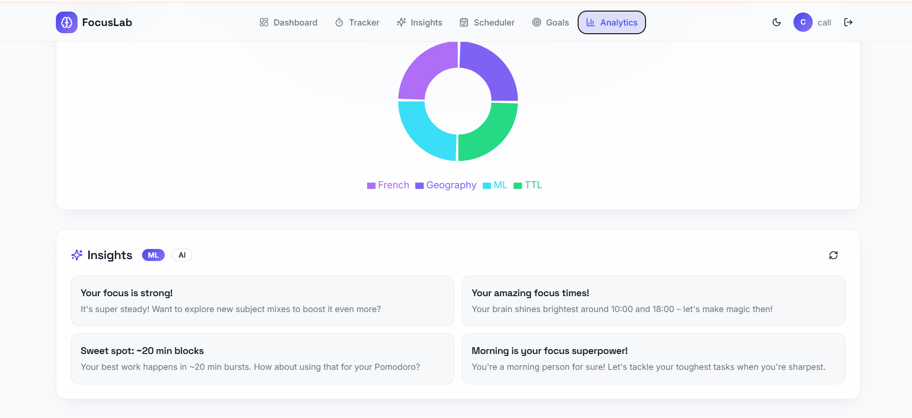
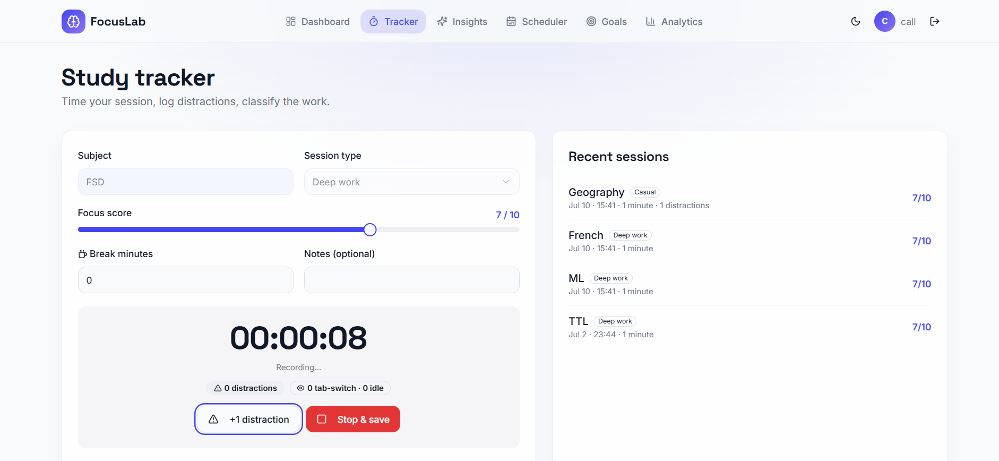
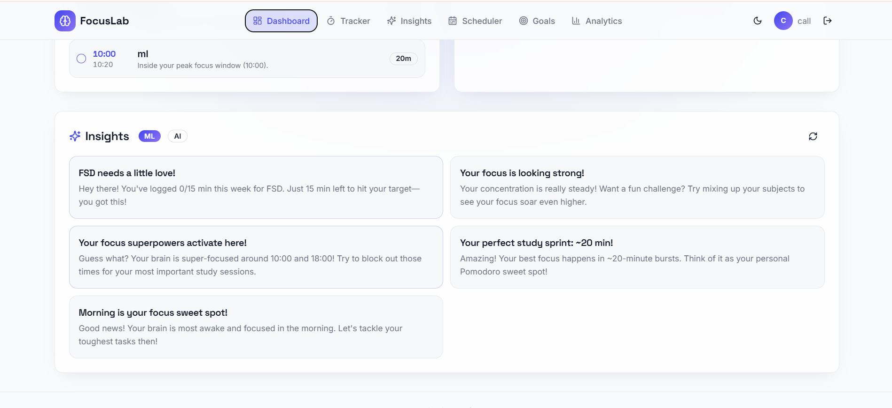
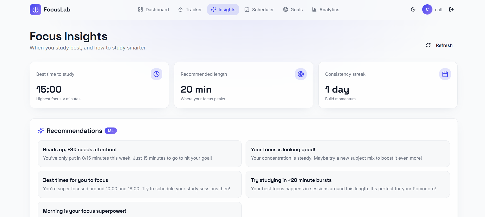

Project Overview
Focus-Ace is an AI-powered MERN-stack web application designed to optimize learning quality by tracking study sessions, monitoring distractions, and analyzing productivity patterns. By leveraging AI models via the HuggingFace Inference API, the platform transforms user study behavior into personalized, actionable improvement strategies. This solution bridges the gap between raw study hours and structured focus management through an intuitive, Tailwind CSS-powered interface.
The goal is to create a community-driven ecosystem that facilitates peer-to-peer learning and professional growth through structured interaction.
Key Features
Intelligent Study Assistant
Enhances learning quality by optimizing study efficiency, focus management, and overall productivity rather than just increasing study hours.
Centralized Tracking Dashboard
Tracks real-time study sessions, monitors user distractions, and comprehensively analyzes student focus patterns
AI-Driven Actionable Insights
Utilizes HuggingFace Inference API models to generate personalized performance feedback, ideal focus timings, and tailored improvement suggestions.
MERN Stack Architecture
Combines a React.js frontend with an Express.js and Node.js backend to provide a robust full-stack web application
Secure Cloud Storage
Employs MongoDB Atlas for protected data management of student goals, study logs, and personalized profiles.
Protected Session Handling
Implements JWT (JSON Web Tokens) authentication to guarantee secure user login and robust data privacy.
Technology Stack
Frontend
- React JS
- Tailwind CSS
Backend
- Node.js
- Express.js
- MongoDB
- HuggingFace Inference API
- JSON Web Tokens (JWT)
Challenges & Solutions
Challenge: Students often fail academically due to a lack of focus management and self-analysis tools rather than a lack of study hours
Solution:Integrated AI models via the HuggingFace Inference API to generate customized feedback, tailored productivity suggestions, and optimal focus timings.
Challenge: Creating a seamless and engaging cross-platform user experience for tracking sessions on both desktop and mobile layouts
Solution: Designed the application frontend using React.js combined with Tailwind CSS for a highly responsive, modern, and user-friendly interface.
Challenge: Protecting sensitive student information, personalized profiles, and academic study history from unauthorized data access
Solution: Implemented secure JSON Web Tokens (JWT) for session authentication and hosted the system logs on a protected MongoDB Atlas cloud database.
Results & Impact
The platform successfully launched and has been serving thousands of customers. Key achievements include:
- Enhanced Study Efficiency: Shifted user focus from raw study hours to optimized, structured productivity and better habit self-analysis.
- Actionable Behavior Insights: Transformed raw study and distraction logs into clear, personalized behavioral metrics for student improvement.
- Automated Feedback Loop: Delivered real-time, tailored productivity suggestions and ideal focus timing recommendations through integrated AI models.
- Secure Data Management: Guaranteed user privacy and safe session handling using encrypted token-based authentication and cloud storage.
- Scalable Architecture Deployment: Established a responsive, full-stack framework capable of expanding to include more complex tracking metrics.
Screenshots




Key Learnings
This project developed technical proficiency in combining the MERN stack with the HuggingFace Inference API to turn raw user behavior into personalized, AI-driven feedback. Additionally, it provided deep insights into implementing secure cloud authentication with JWT while building responsive systems designed to optimize human productivity.